What are Composites and What Is a Composite Material?
In a general sense, a composite material is comprised of two or more sub-materials with different properties. In the industry however, composite materials are typically referred to those which are comprised of a reinforcement material suspended in a plastic matrix. The reinforcement and matrix material are selected for the application and final properties for the composite part.
Table of Contents:
History of Composites
- Ancient Times
Homes in the ancient Egyptian civilization were constructed using composite bricks. The composite bricks used a clay or mud matrix which was reinforced by dried straw. The addition of the straw improved the compressive strength of the brick and prevented bricks from crumbling and mitigated crack growth. - Early 1900’s
With innovations in the synthetic polymer industry, plastics such as vinyl and polyester were developed. These polymers are still extensively used in the manufacturing of consumer goods. For higher strength applications, additional reinforcement material was added. The first appearance of modern composite materials came in 1930’s with the production of fine glass fiber filaments used as insulation, and the advent polyester resin systems. - Mid 1900’s
During the war era, lighter, more durable materials were sought after. Naval vessel hulls were constructed using glass fiber reinforced plastics and had the advantage over metal and wooden constructs of being more resistant to corrosion and fouling due to sea water. After the war, these materials became extensively used in marine, aerospace, and automotive applications. - Late 1900’s
Further development in reinforcement material saw the origin of carbon and aramid materials which offered greater strength and improved wear properties. These materials became extensively used in sporting equipment, as well as in the aerospace and automotive industries. - Modern Day
Currently, composites are used extensively in consumer products and building materials (in addition to the traditional industries) as a light weight, cost efficient alternative to metals. Parts as large as passenger aircraft fuselages are being constructed as a single unit from composite materials. In the automotive industry, as fuel consumption becomes increasingly important, composite materials are being used in structural components such as the chassis and body, to help reduce the mass of a vehicle. Composite materials are also being extensively tested on a nano and micro-scale to improve electrical conductive properties for electronics.
Anatomy of a Composite Part
Composite materials have 3 main constituents which can be tailored to meet the needs of a particular application. By changing the thickness, density, orientation, material, and type of each of these constituents, the overall properties of the composite part can be altered to meet a customized need.
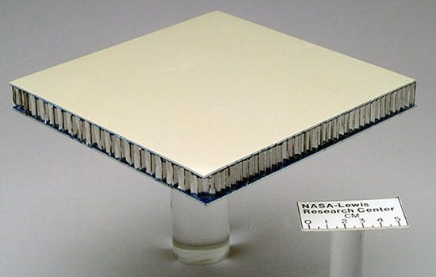
Reinforcement
The reinforcement material serves as the primary load bearing component as it is significantly stiffer and stronger than other constituents in the composite structure. The most common reinforcement materials are glass, carbon and aramid fibers.
If you still are asking the question, what are composite materials, read on or check out our simplified explanation.
- Glass Fiber
Molten glass can be spun and formed into a fine (order of 10 micron) filament. Depending on the chemical combination of the silicates being melted, a different type of glass fiber can be produced. The two most common types are S-Glass and E-Glass. S-Glass (also known as Structural Glass) has a larger percent composition of Silicone Oxide and Aluminum Oxide giving it superior stiffness and tensile strength over E-Glass. E-Glass (also known as Electrical Glass) has improved electrical insulating properties over S-Glass due to a larger composition Calcium Oxide. A variety of other derivatives exist, each catered to a particular need and application.
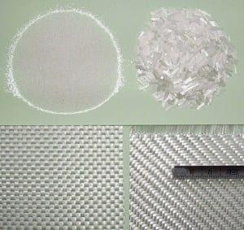
- Carbon Fiber
Carbon Fiber is produced from high temperature heating (1500 °C) and stretching of a high carbon polymer (such as Polyacrylonitrile (PAN)) in an inert atmosphere. On a molecular scale, this process burns off impurities on the main chain such as Hydrogen and Nitrogen atoms, leaving behind a linear carbon chain which are very high in strength and stiffness. This process can be repeated in many stages at higher temperatures to produce higher purity carbon filaments. Carbon Fiber is classified into groups based on its tensile stiffness ranging from a low modulus, to an ultra-high modulus fiber. There is a usual trade-off between the stiffness of the fiber filament and how brittle it becomes. These individual filaments are then placed parallel to one another, and then bundled. The number of individual filaments in a bundle is designated in thousands where a 3K (3000 filaments/bundle) is the most commonly produced. Check out our post for a list of common questions about carbon fiber.
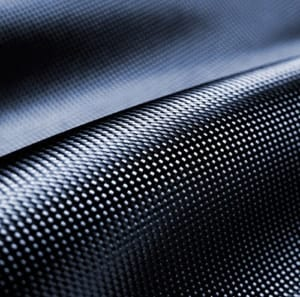
- Aramid Fiber
These types of fibers are produced by spinning an amine group polymer in the presence of acid which has a specific arrangement of Carbon, Oxygen and Hydrogen. This chemical reaction and spinning process produces a fine filament of aramid fiber which is wound on spools. Aramid products are usually used in applications where high strength, stiffness and good abrasion properties are required. Similar to carbon fiber, individual filaments are typically bundled in a parallel arrangement and designated based on the number of filaments per bundle.
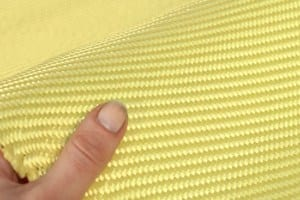
The table below presents typical stiffness properties of uncured glass, carbon and aramid fibers.
| Property | Typical S-Glass Dry Fiber) |
Intermediate Modulus Carbon Fiber (Dry Fiber) |
Typical Aramid Fiber (Dry Fiber) |
|---|---|---|---|
| Tensile Modulus (GPa) | 87 | 231 | 179 |
Sources
- http://www.matweb.com/search/DataSheet.aspx?MatGUID=881df8cd9bde4344820202eb6d1e7a39
- http://www.matweb.com/search/DataSheet.aspx?MatGUID=b3edd4205cad4af68377c77faf9476be
- http://www.matweb.com/search/DataSheet.aspx?MatGUID=706f16a3a8be468284571dd36bbdea35
For more information about what are composites used for, check out our common applications guide.
Reinforcement Material Forms
Based on the composite materials manufacturer and type of manufacturing method and the desired characteristics of the composite part, reinforcement material can be processed into different forms. Generally speaking, processed reinforcement materials can be classified into two main sub-categories:
- Continuous Fibers
This form of reinforcement has fibers which are full length and arranged in a particular orientation with respect to neighbouring fibers. Continuous fibers have an extremely large fiber length to diameter ratio, and typically exhibit excellent strength and stiffness properties. - Discontinuous Fibers
These fibers are processed to a random orientation and often have smaller fiber length to diameter ratios. These fibers are either cut into small strands during manufacturing, or processed into sheets with fibers randomly dispersed and overlapping.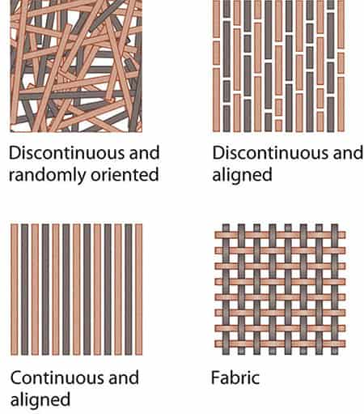
Continuous fibers are commonly used when strength and stiffness are required. In the design process, designers use the orientation of the fibers to strengthen parts in the direction in which they are being loaded. When strength and stiffness are not a concern, discontinuous fibers products are often used and usually offer benefits in manufacturing speed.
Continuous Fiber Products
Tow/Ribbon
This form has spooled bundles of individual filaments. The number of filaments per bundle is usually the main defining feature which differentiates tows from one another. This form is typically used in filament winding processes to produce cylindrical structures. Tows are also used for localized reinforcement or repairs. In some manufacturing methods (spray-up lamination) tows are cut into small fiber lengths and sprayed with a mixture of resin.
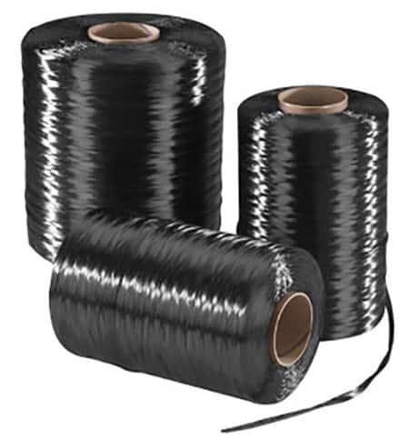
Woven Fabrics
These fabrics are processed by taking individual tows and woven bi-directionally, thus producing strands that are perpendicular to one another (0° strands and 90° strands). The two most common styles of woven fabric are:
Plain Weave: In this arrangement, each 0° strand alternately passes over and under each 90° stand. This arrangement is repeated over the entire woven fabric width and length. This produces a symmetrical pattern and uniform material properties in the 0° and 90° directions. This weave is easier to produce than most other weaves but results in a large amount of fabric ‘crimp’ (geometric reduction in length of woven fabric compared to full strand due to fiber curvature in the over and under arrangement). Since fibers produce the most strength when they are aligned with the load, this arrangement reduces the mechanical properties of the material when compared to other weaves. Plain weaves have good stability and offer easier handling, but are more difficult to drape around complex curvature.
Twill Weave: In this arrangement, each 0° stand alternatively passes over and under two 90° stands in a repeating pattern along the width and length of the fabric. This type of weave produces less fabric ‘crimp’ and twill weaves generally have improved mechanical properties over plain weaves. The arrangement has reduced stability and are more difficult to handle. They are easier to drape around curves but careful handling must be used to ensure gaps and porosity is not introduced in the manufacturing process.
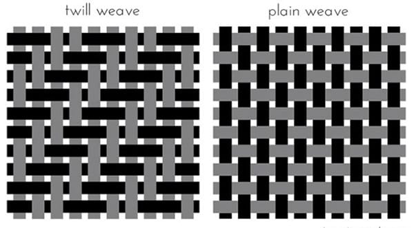
Non-woven Fabrics
These fabrics are processed by taking individual tows and creating an arrangement using nylon stitches, or through the use of a mild adhesive. And then organized in a uni-directional (0°) or bi-directional (0° and 90°) arrangement.
Discontinuous Fiber Products
Fiber Mat
This processed form typically contains chopped filaments of reinforcement material which is suspended in a binding agent. The amount of chopped filament, length of filaments, and the type of binder will determine the properties and manufacturing methods suitable for a particular mat. These materials are easy to work with and reduce the amount of time required to produce a laminate. Mats can also be produced from continuous fibers, whereby the fibers are randomly dispersed.
A veil is a special type of fiber mat which contains fine fibers and is usually used on the surface of a laminate to reduce the fiber imprint and improve the surface finish.
Matrix Material
The matrix material suspends and binds the reinforcement material and hardens to determine the shape of the final part. Compared to the reinforcement material, the matrix material is relatively weak and lacks stiffness. In a loading scenario, the matrix material holds the fibers in place and transfers load between fibers and layers. Matrix material in composite part manufacturing is typically polymer based and hardens from a liquid state in the presence of a hardening agent, air, or heat.
Polymer matrix materials can be broken into two main categories, thermoset and thermoplastic.
Thermoset polymers are most popular in current composite parts. These polymers begin in a liquid state and cure to form a 3 dimensional molecular network. This process is termed as cross-linking and it produces a dimensionally stable solid which has the advantage of being resistant to heat and chemicals. In addition, the 3 dimensional network of molecular bonds gives these forms of polymers good mechanical strength properties. Most polyesters, vinyl esters, and epoxies resins used in industry are thermoset polymers.
Thermoplastic polymers are typically heated to above 500 °C and formed into the part shape. These polymers offer an advantage in being faster to produce as the curing process consists of only cooling. These polymers are not temperature resistant and will melt to a viscous liquid if exposed to high temperature. Some polyester resins are thermoplastic polymers.
Currently, the main matrix materials being used in industry are polyesters, vinyl esters, and epoxies resins. The resin system is selected based on the application and the final part properties required. Fillers and additives can often be added to most resin systems, and obtain characteristics such as flame resistance.
Polyester Resins
Polyester resins are the most widely used resin system. These resins are roughly half ester polymers blended into styrene monomers. In the molecular structure, the styrene enables the cross-linking by bonding between neighbouring polyester chains at specific reactive sites along the chain. Typical polyester resins require a catalyst agent to begin the cross-linking process with the styrene. This process is termed polymerization. Polyester resins offer a good price point and a quick cure time compared to other resin systems. This resin system works well in the presence of water and can be tailored to be chemical resistant. Polyester resins offer reasonable adhesive and mechanical properties compared to other resin systems.
Vinyl Ester Resins
Vinyl ester resin systems carry the same backbone structure as polyester resin systems, but have most of the reactive sites on the ends of the base polymer chain. In addition, vinyl ester resins have fewer ester groups which make it more resistant to water. Vinyl ester resins offer improved crack inhibiting abilities over polyester resins due to the location of cross-linking. With cross-linking only happening at the ends of parallel chains, vinyl ester resin systems are able to absorb more energy before cracks begin to form from an impact. As well, vinyl ester resins offer improved adhesion and mechanical stiffness and strength over a polyester resin.
Epoxy Resins
Epoxy resins are similar to vinyl ester resin systems in the manner that reactive sites exist at the ends of the base polymer chain. The main difference between these resin systems is the absence of ester groups in the base chain. Instead, epoxide groups are found at the reactive sites. Epoxy resins are also different in the manner that they require a hardener agent which is an amine group which is mixed with the resin to allow for it to cure. The ratio of the hardener to the resin is important as any excess of either component will remain uncured. Epoxy systems offer superior adhesion and mechanical stiffness and strength. In addition, with the absence of ester groups, the epoxy system performs extremely well in marine applications and are resistant to many industrial chemicals.
| Resin Type | Typical Tensile Modulus (GPa) | Typical Ultimate Tensile Strength (MPa) |
|---|---|---|
| Polyester Resins | 3.45 | 55 |
| Vinyl Ester Resins | 3.59 | 80 |
| Epoxy Resins | 10.5 | 85 |
Gel Coats
Gel coats are often used in conjunction with polyester and vinyl ester resin systems and are a thermoset plastic. They serve as a protective and aesthetic topcoat which protects the matrix and the reinforcement material from UV light and chemical degradation. They can also be tinted and dyed to replicate any colour and offer a significant advantage over paint in both labour and cost for finishing a composite part. In addition, in the event of damage to the top coat, gel coats can be resurfaced and restored far quicker and at a lesser cost than painted surfaces.
Gel coat is sprayed or brushed on in a thick (10-20mm) layer directly onto the prepared mold surface prior to lamination. The desired thickness is typically built up to 2 or 3 layers with sufficient time between coats. The rest of the lamination process remains unchanged and the overall part finish upon release is greatly improved.
Core Material
Core material is often adhered in between ‘skins’ of reinforced plastic. Cores are typically used to add thickness to parts at little penalty of weight or cost. Adding core greatly improves the flexural (bending) stiffness and strength of a part.
When a material is being loaded in bending, the top surface of the material is being compressed while the bottom surface is being stretched. The further apart the top and bottom surfaces of a part in bending are spaced from each other, the greater the stiffness and strength of the part. In this form of loading, the core material sees what is known as a shear load as the top and bottom of the material is being pulled in opposite directions.
Core materials range widely based on the application, lamination method, and environmental conditions.
PVC Foam
PVC (polyvinyl chloride) cores are a chemical/moisture resistant, closed cell foam which offers good shear strength and adhesive properties. These cores are a rigid thermoset but can be thermoformed easily with the use of heat and pressure. They are manufactured in a variety of thicknesses and densities and are compatible with most resin systems and lamination methods.
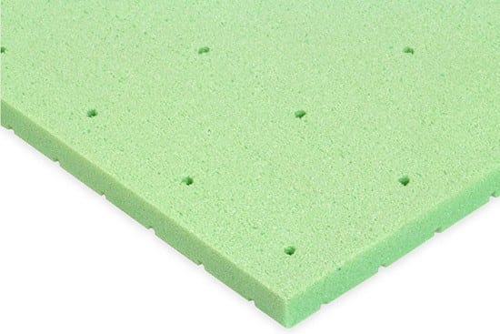
SAN Foam
SAN Foam (Styrene acrylonitrile) cores are a closed cell, lightweight foam core which offers excellent chemical resistance. They are often used in very demanding manufacturing where high heat or high pressure is required. SAN has the unique property of being a thermoplastic and can easily be molded using heat.
Honeycomb Cores
Honeycomb cores can be manufactured from a variety of material but are typically produced from aluminum or a Kevlar based paper known as Nomex. The cells are arranged in a honeycomb pattern which offers a good compromise between strength and weight. These cores can easily be bent and molded to complex shapes. With hand lamination’s and resin infusion lamination methods, this type of core is susceptible to being saturated with resin.
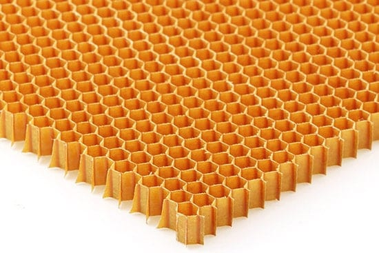
Wood Cores
Wood cores offer very good compressive strength and shear properties at the expense of weight. End grain Balsa wood is typically used. This type of core is frequently used in local loading scenarios where high compressive stresses are expected. In addition, this core is often used at discontinuous locations such as bolt holes and other local stress concentrators. Balsa cores treated with sealers can be used in environments with moisture and can be used with most resin systems and manufacturing methods.
Fabric Cores
Fabric cores and mats are typically far thinner than other core materials. They are usually referred to as ‘bulking’ materials as opposed to a core, and add marginal thickness to the laminate. They are mostly polyester woven sheets which are closed cell so they will not absorb resin during the lamination process. These cores are flexible and conform to bends and curves in a part. Fabric cores are typically very low density and not used where high core shear strength is required.
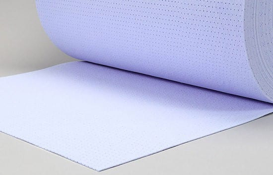
How Are Composites Made?
Composite parts manufacturing methods have been adapted to meet the needs of the part and material. Almost all manufacturing methods require the need for a mold to designate the shape of the composite part. You can specifically learn more about “what is composite manufacturing” guide that covers this extensively.
Molds (or tools) are designed around the final part which is to be produced, the manufacturing method selected, and the required accuracy of the finished part. In the composites industry there are two main designations for tooling….namely, hard and soft tools.
Hard tools are made from ceramics, metals and high density woods. They require a larger initial investment in both material and machining costs. These types of tools are typically used repeatedly and the material is selected based on the robustness required for the mold. In addition, the material is selected based on the manufacturing method (ie. for a temperature cure part, the correct tooling material must be used for simultaneous thermal expansion). These types of tools are also able to hold dimensional tolerances better.
Soft tools are made from foams, composites or other machinable mediums which will wear and degrade as more parts are manufactured. These tools are lower cost and not as well suited for holding strict dimensional tolerances.
Tools preparation is essential to the final finish of the part. New tools are prepared for use by first polishing the surface to a desired roughness index. The roughness of the tooling surface has a direct impact on the surface roughness which will be imprinted on the part. Next the surface is sealed with an interfacial coating which fills very small scale pits and scratches. A release agent is then applied to the tool surface which allows the part to be removed after a full cure. The interfacial layer provides a good surface for the release agent to adhere to. Traditionally, release agents were a consumable material and would need to be applied after each part is removed from a tool. Recently, semi-permanent release agents are being used which can last up to 20 parts, and can be left on the mold surface when a new coat is required.
There are constantly new methods for composite part manufacturing as the diversity or parts and applications grow. In general, most manufacturing methods can be classified into the following categories:
Open Mold/Hand Lamination
This is the most basic form of lamination. Plies of reinforcement material and core are stacked in a prescribed sequence and wet out with the resin system layer by layer over top of a prepared mold. The completed laminate is then allowed to cure based on the requirements for the resin system. This curing processes can be aided by the use of heat.
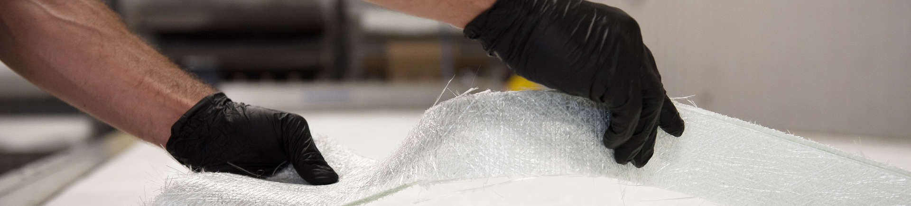
This method is typically used for custom one-off parts and small production runs. Hand lamination requires no complex machinery, tools, or consumables. This process produces some variation in part quality and strength due to inconsistency in resin distribution and entrapment of air voids between layers. Hand lamination’s are also difficult to efficiently scale up in production quantity as they are a labour intensive process. Efficiency for this process can be improved by using a spray on resin system and by having reinforcement material pre-cut prior to the lamination.
Spray-Up Lamination
This form of lamination utilizes a pneumatic spray gun which chops strands of reinforcement material and a mixture of resin directly onto the mold surface. This method usually begins with an application of a gel coat on the mold surface. A mixture of resin, catalyst and chopped reinforcement material is then sprayed over top of the mold and compacted using a roller. Core and subsequent layers can be applied to add additional stiffness. Typically the laminate is then allowed to cure at room temperature or in an oven based environment, depending on the requirements of the resin. The part is then removed and the mold can be prepared for the next manufacturing cycle.
This method reduces the time required to complete a lamination. In addition it is suitable for larger parts as this method allows for a large coverage area. Spray-up lamination methods utilize discontinuous fibers which greatly reduces the strength of a part. In addition, due to inconsistencies in spraying, tolerances can be difficult to maintain. There are also health and environmental concerns over this form of manufacturing as large amounts of styrene content is released into the atmosphere.
Wet Bagging
Similar to a hand lamination, this process requires reinforcement plies to be wet out with a resin system layer by layer over top of a prepared mold. Prior to the resin curing, a consumable release ply, resin absorption material, and vacuum bagging film is placed over top of the final ply of reinforcement material. The vacuum bagging film is then sealed to the ends of the mold using an air tight mastic tape. A vacuum is then used to draw out air from between the mold surface and the vacuum bagging film, thus applying pressure and removing voids of air entrapped between plies of reinforcement material. Vacuum port positioning and the use of ‘breather’ material in strategic locations is important to ensure equal vacuum pressure is applied across the entire part.
This process greatly improves inter-laminar bonds resulting in greater structural integrity. For this method of lamination, a resin system with the appropriate cure time must be selected to ensure the plies can be thoroughly wet out and bagged prior to cure. Resin systems can be designed to offer different cure times.
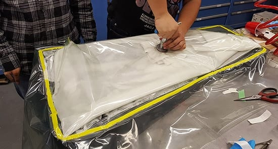
Resin Infusion
In a resin infusion lamination, dry plies of reinforcement material and core are placed in the correct sequence over top of a prepared mold surface. The mold is also strategically fitted with a resin supply line and a vacuum draw line. The laminate is then covered with a porous releasing ply, and a flow medium which allows for the flow of resin during the infusion process. An air tight vacuum bag is then fitted which seals around the part and the supply and draw lines. Air is then evacuated out from the draw line while catalyzed resin is injected from the opposite end of the part. Resin supply and vacuum pressure are monitored carefully during this process to ensure the entire part is uniformly wet out with resin and has equivalent vacuum pressure throughout the part. Once the correct amount of resin is injected, the supply line is sealed off and the laminate is allowed to cure under a regulated vacuum pressure and temperature conditions.
This method allows for larger, more complex parts to be manufactured compared to hand lamination and wet bagging methods. In addition, part quality and consistency is improved as resin uniformity and the curing cycle are more closely regulated between parts. This method is suited for both small and large production runs and is increasingly being automated. This method has many variants such as Resin Transfer Molding (RTM), Vacuum Assisted Resin Transfer Molding (VARTM), and Resin Injection Molding (RIM) which all have similar processes but differ in how and when the resin is injected and distributed. Increasingly, a matching male and female mold technique is being employed in fully automated settings to allow labour and consumables such as vacuum bagging film to be reduced.
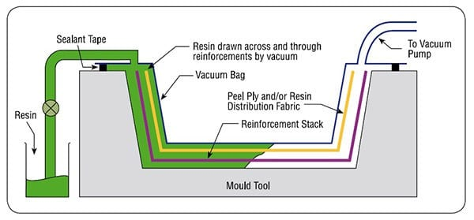
Autoclave Cure
Autoclave cure techniques are most commonly used with pre-impregnated (prepreg) reinforcement material such as prepreg carbon fiber when very high quality parts are required. This form of material has an un-catalyzed resin film which is applied to one or both sides of the reinforcement material by the manufacturer. This material is always stored in a climate controlled environment as the resin is catalyzed by heat. These materials have a prescribed shelf-life.
During the lamination process, the prepreg and core material is placed over top of a prepared mold surface in the prescribed sequence and orientation. A slight amount of tack is present on the surface of the prepreg allowing it to hold its place on the mold surface without voids and gaps being created. Fine contours and tight corners are laminated using the help of a heat gun to ensure the prepreg covers the entirety of the mold surface. Since the prepreg material has the perfect amount of resin for the amount of reinforcement material, any gaps or voids will remain unfilled in the finished part, thus making the initial uncured lamination process the limiting factor in the parts final quality. A film adhesive is often used between prepreg material and the core to ensure a quality bond is formed. In an autoclave cure, the laminate and mold are fitted with a vacuum bag which draws out air during the curing process. The mold and the entire part is placed inside of the autoclave which has control over the pressure and temperature of the environment. The autoclave has the advantage of producing conditions above 1 atmosphere (14.7 psi) during the curing process, allowing for more force to be applied on the part surface thus reducing voids and improving the inter-laminar bonds. This increased force is only typically required for extremely high grade parts and is almost exclusively used in aerospace and performance automotive settings.
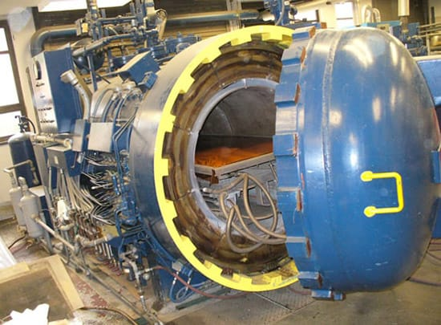
In an autoclave cure cycle, the temperature is ramped up to an intermediate temperature causing the impregnated resin viscosity to drop, enabling it to flow and wet out the fibers of the reinforcement material. The temperature is then raised to the final cure temperature where the resin begins to catalyze and form chemical bonds. This process is carefully monitored using thermocouples to ensure that all areas of the part see the correct temperature conditions for a complete cure.
Autoclave processes require expensive prepreg material which has a limited shelf-life. In addition, there is a large capital cost associated with procuring equipment for an autoclave production run. Typically, parts will also spend upwards of 8 hours to go through a full autoclave cure cycle thus lowering the productively and usage of the autoclave and mold.
Oven Cure
Similar to autoclave cures, oven cures can be used to manufacture parts from pre-impregnated reinforcement material. An oven cure is typically used when the additional force of a high pressure atmosphere is not required. This dramatically reduces the initial capital cost for the production of prepreg parts. Oven cures are also often used with standard resin systems in certain applications where specific properties of the final cured part are required.
Post Cure Finishing
Composite parts are often trimmed and finished to the desired specification after final cure. Like metals and other materials, composites can be cut, trimmed, sanded and machined.
In low volume production runs, hand trimming, sanding and finishing is commonly used. These methods do not scale up well and are extremely labour intensive. They also cause health concerns due to exposure to fine particulate matter.
Composite parts are frequently brought down to exact dimensions through the use of precision automated part trimming tools which are able to remove material from ends and produce clean holes. The finished part is free of stray fibers or built up resin. Composite parts can also be brought down to final dimensions using sheet metal manufacturing methods such as a water jet which leaves behind clean, smooth edges.
When very precise fits and tolerances are required, composite parts can be machined using traditional machining methods. Typically, compression style tool bits are used to maintain the structure and distribution of reinforcement material in the polymer matrix. For drilling holes, an orbital style bit is used to prevent de-lamination and improve the dimensional accuracy throughout the hole depth.